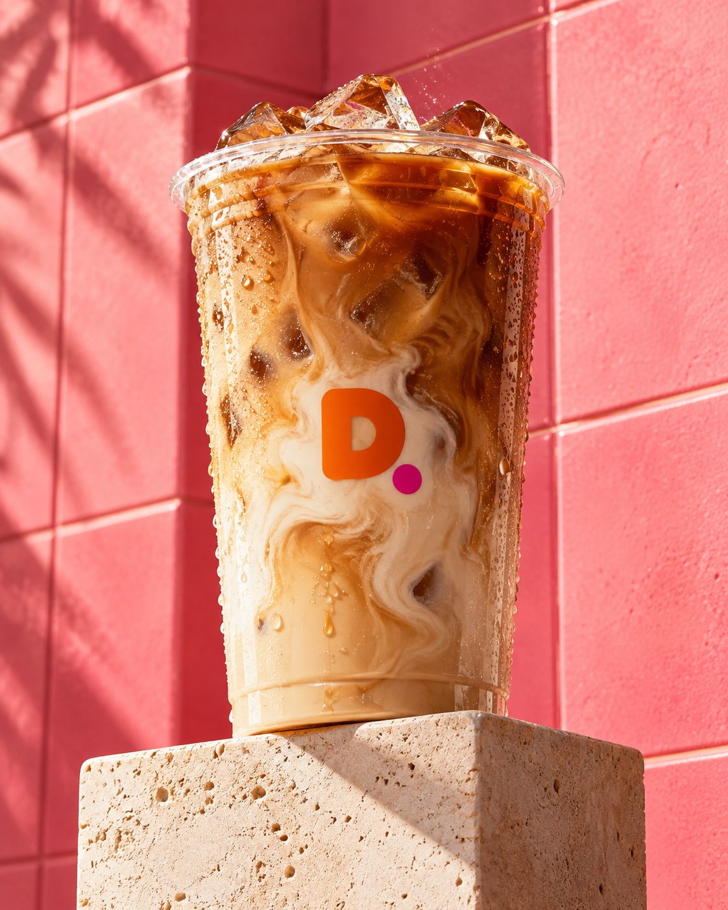
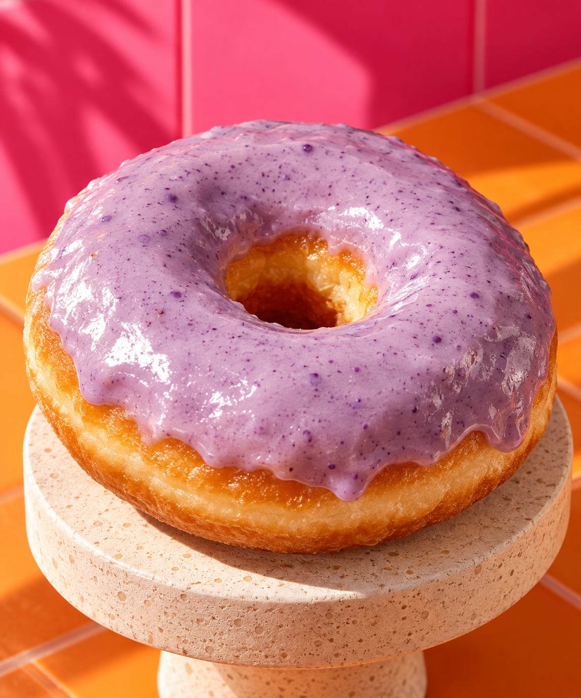
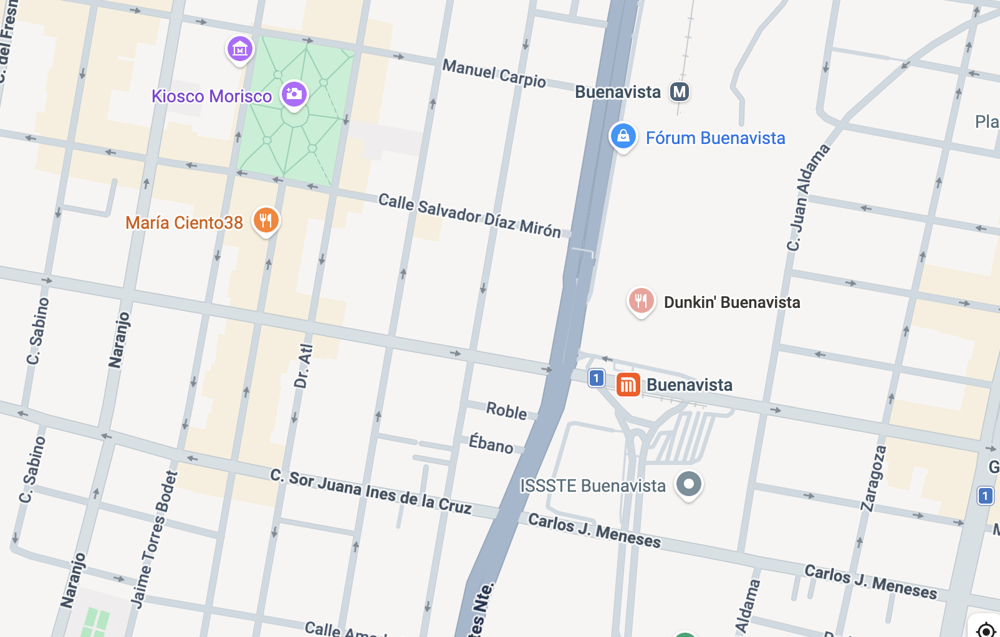

Escritorio · frame de 1318 px
TU DÍA PIDE DUNKIN
Consulta las medidas de Figma y prueba los componentes con los estilos del proyecto.


#F20C90--color-pink
Localizador, titulares y botones principales.
#FF6D0D--color-orange
Botones secundarios, etiquetas y pie de página.
#F76DBC--color-light-pink
Fondo del producto destacado.
#FFFFFF--color-white
Superficies, logotipos y texto sobre fondos de marca.
#F5F5F5--color-off-white
Texto del localizador y de la variante transparente original de Figma.
#1C1C1C--color-dark
Texto base web; en Figma figura en la barra de estado móvil.
Los archivos SVG conservan sus propios rellenos, incluidos #EF6A00 y #C63663 en el logotipo a color.
TU DÍA PIDE DUNKIN
TU DÍA PIDE
DUNKIN
Las muestras del titular se reducen si el espacio es estrecho. En el hero móvil, Figma usa 24 px en los espacios entre palabras.
Figma usa 400, 600 y 700. El archivo local admite todo el intervalo 300–700.
| Función y texto | Familia / peso | Escritorio (px) | Móvil (px) | Interlineado | Entre caracteres |
|---|---|---|---|---|---|
| Hero · «TU DÍA PIDE DUNKIN» | Dunkin Sans 700 | 64,99 y 122,77 | 48 | 120 % | 0 |
| Producto · «STRAWBERRY DRAGONFRUIT REFRESHER» | Dunkin Sans 700 | 80 | 46 | 120 % | 0 |
| Sección · «NOVEDADES» y «SOMOS» | Dunkin Sans 700 | 48 | 48 | 120 % | 0 |
| Sucursales · «TU DUNKIN ESTA CERCA» | Dunkin Regular 400 | — | 40 | 43 px | −4 % |
| Navegación · «SUCURSALES» | Dunkin Sans 700 | 20 | Iconos en la cabecera original | 120 % | 0 |
| Localizador · «Encontrar ubicación» | Quicksand 700 | 24 | 24 | 120 % | 0 |
| Hero · «Encuentra algo para cada momento de tu día.» | Quicksand 700 | 20 | 16 | 120 % | 0 |
| Producto · «Frutal, frío y hecho para esos días en los que necesitas un break.» | Quicksand 600 | 20 | 16 | 150 % | −1,9 % |
| Categoría · «BEBIDAS FRÍAS» | Quicksand 700 | 16,11 | 15 | 120 % | 0 |
| Etiqueta · «Tu día sabe mejor con Dunkin» | Quicksand 700 | 20 | 15 | 16 px | 0 |
| Botón · «VER MENÚ», «Probar ahora» | Quicksand 700 | 16 o 18 | 13 o 16 | 120 % | 0 |
| Pie · «ACERCA DE», «CONTACTO» | Dunkin Sans 400 | 15,52 | 15 | Automático | 0 |
| Pie · contacto y navegación | Quicksand 400 / 700 | 15,52 | 15 | 16,55 / 16 px | 0 |
Interlineados web. Las frases de marca pasan de 16 a 24 px en escritorio y mantienen 16 px en móvil. El pie usa 24 px de interlineado en escritorio y 20 px en móvil; los originales son 16,55 px en escritorio y 16 px en móvil.
--space-4--space-8--space-12--space-16--space-24--space-32--space-40--space-48--space-64--space-80--space-96| Aplicación | Original de Figma | Normalización web |
|---|---|---|
| Botón estándar · relleno interior | 8 px vertical y 24 px horizontal | 8 y 24 px en .button |
| Botón compacto · relleno interior | 8 px vertical y 12 px horizontal | 8 y 12 px con .button--narrow |
| Etiqueta de marca · relleno interior | 8 px vertical y 29 px horizontal | 8 y 29 px en .brand-label |
| Hero móvil · gap vertical | 12 px | 12 px en la escala disponible |
| Foto y rótulo de categoría · gap | Escritorio: 6,45–29,01 px. Móvil: 6–27 px. | Se conserva la separación individual de cada categoría. |
| Banner móvil · gap entre texto e icono | 9 px | 9 px en móvil y 13 px en escritorio. |
| Retícula · margen lateral | Escritorio: 40 px. Móvil: 24 px. | 40 / 32 / 24 px en escritorio, tableta y móvil |
| Retícula · gutter | Escritorio: 20 px. Móvil: 16 px. | 20 / 20 / 16 px en escritorio, tableta y móvil |
El contenedor web es fluido hasta --container-max (1318 px, incluido el padding lateral). Cambia el ancho de la ventana para ver cómo responde la muestra.
| Vista | Breakpoint web | Columnas web | Margen web | Gutter web | Frame original |
|---|---|---|---|---|---|
| Móvil | Menos de 768 px | 4 | 24 px | 16 px | 402 px · 4 columnas, márgenes de 24 px y gutters de 16 px |
| Tableta | 768–1023 px | 8 | 32 px | 20 px | Sin frame de referencia |
| Escritorio | Desde 1024 px | 10 | 40 px | 20 px | 1318 px · 10 columnas, márgenes de 40 px y gutters de 20 px |
La muestra usa .layout-grid y los breakpoints reales. Los bloques ocupan 2 columnas en móvil y tableta. En escritorio se distribuyen en 2 + 3 + 3 + 2 columnas.
Pasa el puntero por cada botón y retíralo para probar la ida y la vuelta del hover.
En hover, fondo blanco con texto y contorno rosa.
En hover, fondo blanco con texto y contorno naranja.
En hover, fondo rosa con texto blanco.
En hover, relleno del color del contorno y texto blanco. Menú usa naranja y Monterrey, rosa.
| Aplicación | Figma | Variante web |
|---|---|---|
| VER MENÚ · hero | Default, rosa con texto blanco; 16 px móvil / 18 px escritorio | Primary |
| Trabaja con nosotros · Encontrar mi Dunkin · CDMX | Trabaja, Variant2 y Variant6; rosa con texto blanco; 13 / 16 / 13 px | Primary |
| Probar ahora · componente original | Variant3 naranja con texto blanco; 13 px | Secondary |
| VER MENÚ · categorías | Instancia naranja con texto blanco; 16 px | Secondary |
| Cerca de mí · Conócenos | Variant8 y Variant9; naranja con texto blanco; padding horizontal de 12 px | Secondary compacto |
| Probar ahora · destacado; Encontrar Local · móvil | Instancias blancas con texto rosa; 18 / 13 px | Inverse |
| Inicio | Variant10 transparente, texto blanco secundario; 16 px | Inverse sobre fondo oscuro |
| Menú | Menu; fondo transparente, texto rosa, borde naranja; 16 px | Outline con borde naranja. |
| Monterrey | Variant7; fondo transparente, texto naranja, borde rosa; 13 px | Outline pequeño con borde rosa y texto rosa según la revisión. |
Estado en reposo del componente.
Pasa el puntero para ver la inversión de colores y el cambio de escala.
Llega con Tab para ver el contorno.
Mantén pulsado el botón para ver la presión.
Botón nativo deshabilitado.
Decisión de desarrollo web. El hover se añadió después de Figma. Usa una transición de ida y vuelta de 250 ms con ease y una escala de 1,03 que conserva el espacio del botón en el layout. Se activa con puntero preciso compatible con hover. Con prefers-reduced-motion, el color cambia de inmediato y se mantiene la escala original.
El foco de doble contraste y el estado deshabilitado se conservan. Al pulsar un botón, active reduce su escala a 0,97 en 120 ms. Con movimiento reducido conserva su escala.
Los tamaños --small (13 px), estándar (16 px) y --large (18 px), el padding compacto --narrow y los modificadores --with-icon y --icon-only son independientes del color. Los iconos son los SVG originales.
El enlace de texto hereda base.css. Su grosor de subrayado en hover, el subrayado doble en active y el ejemplo de enlace inactivo son propuestas de la guía.
Los botones y el enlace del localizador usan un área mínima de 44 px de alto. Los botones también tienen un mínimo de 44 px de ancho, incluso con icono solo. El foco por teclado combina un anillo claro y un contorno oscuro.
El blanco sobre rosa y el rosa sobre blanco dan 4,02:1. El blanco sobre naranja da 2,82:1 y sobre rosa claro, 2,67:1. El blanco secundario del localizador sobre rosa da 3,68:1 y alcanza el mínimo para su texto de 24 px en negrita. El contorno naranja sobre blanco da 2,82:1, por debajo de 3:1 cuando el borde es necesario para distinguir el control. Criterio de contraste del texto · Criterio de contraste de componentes.
Alternativas para aprobación. Usar al menos 19 px en negrita donde la combinación rosa/blanco lo permita, especialmente en botones, navegación y rótulos. Para el texto blanco sobre naranja o rosa claro, evaluar un fondo más oscuro o una opción de alto contraste. Revisar el contorno naranja sobre la superficie final de cada botón. Estas alternativas siguen pendientes de aprobación y la landing presenta incumplimientos de contraste respecto a WCAG AA.
Archivos originales de Figma, a sus dimensiones SVG.
--radius-button--radius-label--radius-photo
--shadow-soft: 0 3px 8px rgba(0, 0, 0, .15)
--shadow-medium: 0 4px 12px rgba(0, 0, 0, .25)Ambos tamaños de pantalla usan los mismos valores. El modificador .image-shadow--alpha aplica drop-shadow() a las imágenes transparentes. Para una imagen opaca, .image-shadow usa box-shadow.
| Aplicación | Escritorio: X / Y / blur (px) | Móvil: X / Y / blur (px) |
|---|---|---|
| Bebidas frías | 3,22 / −1,07 / 14,50 | 3 / −1 / 13,50 |
| Donas y Munchkins | 0 / 4,30 / 4,30 | 0 / 4 / 4 |
| Café | 0 / 4 / 9,80 | 0 / 4 / 6,90 |
| Desayuno | 0 / 4 / 8 | 0 / 4 / 6,90 |
Referencia documental de Figma. Las cuatro sombras originales tienen negro al 25 % y expansión 0.
Las etiquetas usan texto blanco, fondos rosa y naranja de Figma, radio de 15 px y padding de 8 × 29 px. En escritorio el interlineado web es de 24 px.

.photo (25 px).
object-fit: cover.La galería usa los recortes de cada frame y el radio original de 25 px. El Refresher conserva sus efectos y desenfoques originales sin aplicar la sombra media. El desenfoque progresivo de 0 a 4 px de la pitahaya destacada todavía no tiene equivalencia compartida.
Las cintas de Nosotros son estáticas. Una sola imagen de la dona acompaña el relato dentro de su sección: permanece anclada y se desplaza suavemente con el progreso del scroll, en ambos sentidos. Al finalizar, sale con el relato antes del bloque de empleo. Con movimiento reducido permanece fija en la composición inicial y los textos se muestran completos. Las cajas de los recursos conservan sus proporciones con cualquier candidato WebP.
Después de la primera vista, los títulos, párrafos y gráficos del relato aparecen al entrar en pantalla. La entrada combina opacidad y un ascenso de 24 px en escritorio y 20 px en móvil, con 700 ms de ease-out y 120 ms entre grupos. Cada elemento se revela una vez. Con movimiento reducido o sin JavaScript, todo el contenido queda visible desde el inicio.
Ver paneles, composición de marca y bloque de equipo
Las tarjetas muestran datos provisionales de Figma. Pulsa cada una para alternar su estado. El mapa estático y su marcador documentan el encuadre móvil de Figma. La tarjeta conserva el ancho de referencia de 356 px, padding de 14 × 12 px y radio de 23 px. En el localizador, «Cómo llegar» aparece en la ventana del marcador. Si el mapa no carga, el enlace aparece debajo de la tarjeta seleccionada.

Abrir la previsualización de Sucursales
Escribe parte de un nombre o usa la lupa. Prueba «americano» para ver dos coincidencias y «vainilla» para ver el estado vacío. Usa × o «Ver todos los productos» para restablecer la lista. El lector de pantalla anuncia el número de resultados.
El selector usa un grupo de opciones. Con el teclado, usa Tab para entrar y las flechas para cambiar de ciudad. La muestra permite probar la selección sin cambiar la preferencia de Menú-Café.
Intenta buscar con otro nombre.
Desplaza la pista horizontalmente con el dedo o el trackpad. Con el foco sobre la pista, usa las flechas, Inicio o Fin. Café abre el catálogo actual. Las demás categorías se muestran como referencias visuales.


La ficha de COLD BREW muestra S como estado inicial. Usa Tab y las flechas para probar la selección exclusiva. El foco enmarca la opción y el hover y la pulsación la subrayan. La selección solo cambia la presentación. Los volúmenes y precios que aparecen aquí proceden del prototipo.
La imagen conserva su proporción y tamaño de cada frame. En hover, el nombre cambia a naranja y la imagen crece a 1,05, sube 6 px y usa la sombra suave. La transición dura 250 ms con ease-out. El foco conserva su contorno y la pulsación reduce la imagen a 0,97. Con movimiento reducido se aplican solo el color y la sombra, sin desplazamiento, escala ni transición. La muestra abre la ficha de Cold Brew.
La muestra usa las cuatro fotografías originales con sus proporciones, la sombra suave aprobada y los rótulos rosa #F20C90 en mayúsculas. Los enlaces llevan a las categorías de la landing.
Decisión de desarrollo web. En dispositivos con puntero preciso y hover, el nombre pasa de rosa a naranja y la imagen crece a 1,05, sube 6 px y pasa de sombra suave a media. La transición dura 250 ms con ease-out. Con movimiento reducido se aplican solo el color y la sombra, sin desplazamiento, escala ni transición.
Adaptación web. La fila de cuatro empieza a 768 px. El botón conserva los 44 px de altura del sistema y su centro coincide con el de Figma. Los enlaces usan anclas provisionales de la landing mientras se crean las páginas.
Toda la franja rosa de 64 px funciona como enlace. El subrayado aparece con el puntero y el foco de teclado se indica con un contorno interior.
En los frames de escritorio y móvil se verificó blanco en los titulares y textos del hero, el producto destacado, la promoción de sucursales y el pie. La navegación de escritorio, NOVEDADES y SOMOS usan rosa. Las muestras tipográficas de la guía conservan sus rótulos editoriales.
Decisión de desarrollo web. La bebida completa un ciclo de 5,5 s con 12 px de recorrido vertical y hasta 2° de variación de giro en el frame de escritorio. Las tres pitahayas usan ciclos de 6,1, 6,6 y 6,9 s con distintos desfases. Cada ciclo vuelve a la pose original mediante transformaciones con ease-in-out. En móvil se reduce la amplitud y solo se animan las capas visibles en ese frame.
El control con icono de la esquina inferior derecha pausa y reanuda únicamente la composición del Refresher. El movimiento se detiene fuera de pantalla y se desactiva con la preferencia de movimiento reducido.
Probar la flotación del Refresher
Las cintas avanzan a 42 px/s y las fotografías a 18 px/s. En móvil las pistas de cada sección van en sentidos opuestos. En escritorio las fotos se pueden recorrer mediante arrastre, desplazamiento horizontal y flechas del teclado. El control de icono en la esquina inferior derecha de la galería pausa y reanuda ambas secciones. Su contorno rosa mide 28 px de diámetro y su área interactiva es de 44 × 44 px. El movimiento comienza automáticamente. La galería horizontal admite gestos táctiles y deja libre el scroll vertical. Con movimiento reducido, el control se oculta, las frases se ajustan en filas y las fotos móviles se muestran en columnas estáticas.
Probar los carruseles en la landing
Los botones de la muestra heredan el hover y el foco de teclado globales. La promoción de sucursales aparece por debajo de 768 px. Su titular conserva 40 px, interlineado de 43 px y espaciado de −1,6 px. «Conócenos» usa 18 px en escritorio y 13 px en móvil, y el logotipo de Somos conserva su proporción de 354 × 69 px.
La muestra al final de la guía reutiliza .site-footer. Los enlaces disponibles se subrayan con el puntero y tienen contorno al recibir el foco de teclado. Los círculos de redes conservan sus colores y crecen a 1,03 en 250 ms con ease cuando el dispositivo admite hover. La preferencia de movimiento reducido desactiva ese efecto.
En escritorio los encabezados usan 18 px, los enlaces y el contacto 16 px y los derechos 14 px, con interlineado de 24 px. En móvil, los enlaces habilitados tienen objetivos de al menos 44 px. Los destinos de redes y los documentos legales siguen pendientes. Los datos de contacto corresponden al texto de Figma.
El encabezado conserva su tamaño inicial y reduce su padding vertical al bajar. La transición tarda 250 ms y se desactiva con movimiento reducido. La página reserva su altura inicial y separa de la cabecera los destinos de los enlaces internos. La sección activa usa un único indicador naranja, incluso al pasar el puntero. El subrayado rosa identifica los enlaces no activos en hover y todos conservan el contorno de foco.
La referencia de 402 × 874 px usa Dunkin Sans Bold de 46 px en filas de 95 px. Las tres variantes hover muestran una franja naranja con las mismas letras blancas, tamaño y posición. En pantallas táctiles, la franja aparece al pulsar. La entrada y la salida duran 300 ms con ease-out, y se desactivan con movimiento reducido. Los iconos sociales conservan el arte original y esperan destinos confirmados.
Probar el encabezado en la landing
La guía utiliza .button y sus modificadores, .brand-label, .photo, .layout-container, .layout-grid y .layout-cluster del proyecto. Los CTA usan .button--compact para conservar su silueta y el área táctil. El Refresher y Novedades comparten el aspecto de .loop-control.